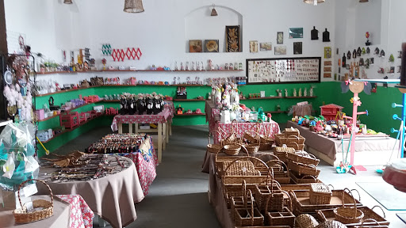

A Estação do artesanato, sem duvidas é um local muito visitado pelos turistas que se encontram na cidade de Gravatá, com mais de 30 anos de existencia, a estação é sem duvida um dos lugares preferido, onde se encontra diversos tipos de artesanato feito a mão e com muito carinho!
Estação vista por dentro

A Estação do artesanato, funciona de domingo a domingo e é uma associação com diversos artesões que produzem suas obras de artes e expoem elas la na estação, com diversos tipo de artesanatos: Roupas, chaveiros, kit de cozinha, toalha, apito, quadros, casas de brinquedo e etc